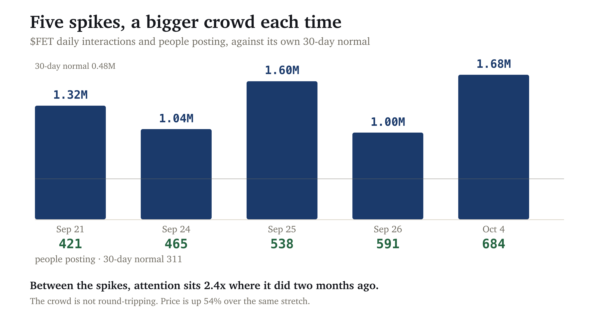
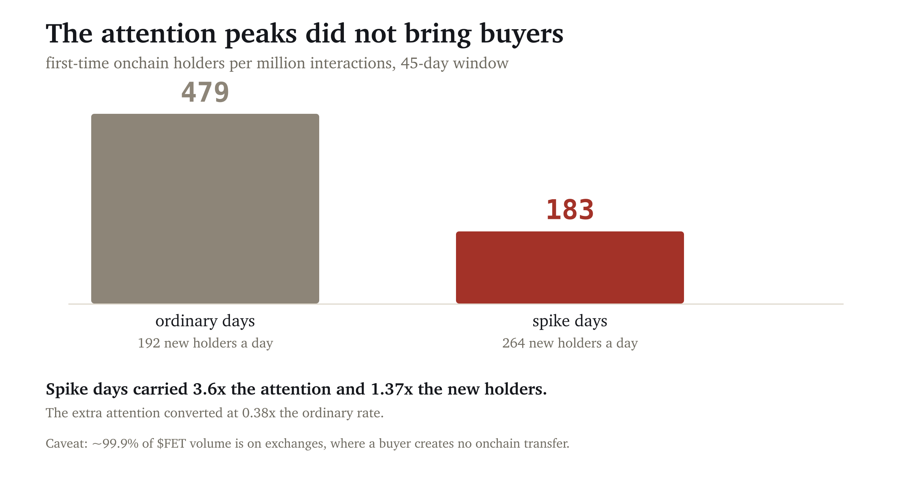
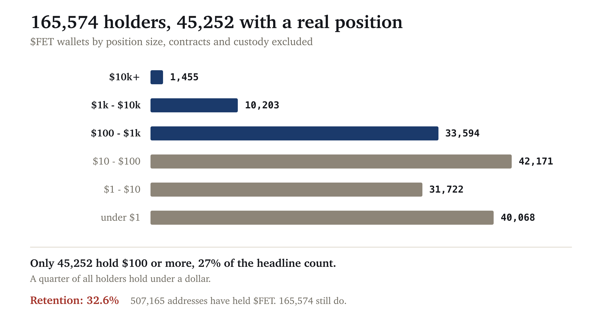

| Metric | Value | Read |
|---|---|---|
| Attention vs 30-day baseline | 3.5x on 2026-10-04 | elevated |
| Spam share vs the token's own norm | 0.184 vs 0.302 (0.61x) | clean, falling |
| Repeated wording across accounts | 0.0% | no campaign |
| Creator concentration (top 3) | 62.8% | concentrated |
| Largest single account | 38.1%, 62,801 followers | real account, not a burner |
| Attention floor, 90 days | 2.42x, with 1.58x the people | compounding |
| Onchain conversion on spikes | 0.38x the ordinary rate | peaks did not convert |
| Holders with $100+ | 45,252 of 165,574 | 27% of the headline count |
| Holder retention | 32.6% | two thirds have left |
| Manufactured score | 23/100 | organic (under 30) |
Score computed with the published formula in the open hype-detector project: spam lift 0.0, spam share 3.7, concentration 18.8, sentiment uniformity 0.0.
A spike on its own says very little. Attention dies fast whatever its source, so what matters is who showed up and whether they stayed.
| Date | Interactions | People |
|---|---|---|
| 2026-09-21 | 1,317,530 (2.8x) | 421 |
| 2026-09-24 | 1,044,228 (2.2x) | 465 |
| 2026-09-25 | 1,602,991 (3.4x) | 538 |
| 2026-09-26 | 1,003,405 (2.1x) | 591 |
| 2026-10-04 | 1,675,803 (3.5x) | 684 |

Counting only the quiet days, with every spike excluded: the floor rose from 208,975 interactions and 238 people ninety days ago, to 506,250 and 376 people now. Each wave left more behind it than the last.
This is where the audit argues with itself, and the disagreement is reported rather than resolved.
Every address that has ever received $FET was reconstructed from raw Transfer logs across all 15.1 million blocks since the contract deployed in October 2020: 507,163 addresses across 2,185 days. That gives the day each one first ever held the token.

Spike days carried 3.6x the daily attention and produced 1.37x the daily new holders, so the extra attention converted at 0.38x the ordinary rate. On this measure the peaks did not bring buyers in proportion to their size.
How much weight this carries. Roughly 99.9% of $FET's volume is on exchanges rather than onchain: $304M reported against $291k in the deepest DEX pool. A buyer on Binance creates no Ethereum transfer and never appears in this measurement. The metric is strong on tokens that trade onchain, which is what it was built against, and weak on an exchange-listed large cap. It is reported with that limitation rather than dropped.
| Share of 24h interactions | Followers | Account |
|---|---|---|
| 38.1% | 62,801 | JavonTM1 |
| 12.6% | 19,900 | d3centralizer |
| 12.1% | 12,752 | cryptoaimantiktok |
| 9.8% | 10,000 | globalrashidshorts |
| 9.4% | 584 | traderkitsune |
Top-3 concentration of 62.8% is genuinely high and is almost the entire score, contributing 18.8 of its 23 points. What stops it reading as manipulation is the composition: established accounts with real followings, on video platforms, not posting the same words as each other. The one low-follower account at 9.4% is worth noting and is not enough to change the picture.
Classified: broad crowd. Not a megaphone, which needs top-3 above 90% with low spam. Not an institutional broadcast, since no exchange or alert feed appears. Not a coordinated botnet, which needs a fresh spam wave above baseline, and spam fell.
A headline holder count is a vanity number on its own. 165,000 holders where most hold airdrop dust is a different token from 8,000 where every one is a position, and the count cannot tell them apart. Every holder was enumerated with their balance.

| Position size | Wallets | Share |
|---|---|---|
| $10k or more | 1,455 | 0.9% |
| $1k to $10k | 10,203 | 6.4% |
| $100 to $1k | 33,594 | 21.1% |
| $10 to $100 | 42,171 | 26.5% |
| $1 to $10 | 31,722 | 19.9% |
| under $1 | 40,068 | 25.2% |
45,252 addresses hold $100 or more, 27.3% of the 165,574 headline count. A quarter of all holders hold under a dollar. The figure a project would quote overstates the holder base with a real position by roughly 3.7x. That is not unusual, which is exactly why it is reported this way.
| Retention | |
|---|---|
| ever received the token | 507,165 |
| still hold it | 165,574 |
| retention | 32.6% |
341,591 addresses have held $FET at some point and no longer hold any. Two thirds of everyone who has ever held it has left.
This is the sharpest counterweight in the report to the social finding. A conversation that is broadening, with a rising attention floor, is happening around a token whose historical holder base has mostly exited. Both are measured and neither cancels the other. The exchange-volume caveat from section 3 applies here too: an address that bought on an exchange and never withdrew appears in neither figure.
Ranked against a verified population of 200 tokens by market-cap rank, stablecoins and wrapped assets excluded:
| Metric | $FET | Percentile of 200 |
|---|---|---|
| Creator concentration | 69.9% | 70th |
| Repeated wording across accounts | 0.0% | 0th |
| Cross-token accounts | 17.3% | 65th |
Concentration sits in the upper third, which is the one thing an informed reader should push back on. It is not accompanied by any of the signals that usually travel with manufactured concentration.
Supply. 165,585 holders, cross-checked against a second source at 165,145, a 0.3% difference. Top-10 holders control 48.0% of supply across all addresses but 27.7% once contracts are excluded; the two largest are Gnosis Safes at 10.2% and 9.6%, consistent with treasury rather than individual positions.
Post-level labels measure amplification, not its source. A bot campaign, coordinated advocacy, algorithmic amplification and an unusually tight real community can produce overlapping patterns. Where evidence is consistent with more than one mechanism, this report says so.
Specifically here: an absence of copypasta rules out one technique and does not rule out coordination conducted carefully. Follower counts are not authenticity. The creators endpoint reflects measurable interactions, so a network spreading activity across many small accounts reads as less concentrated than it is.
The onchain conversion figure cannot separate attention that failed to produce buyers from buying that happened somewhere this measurement cannot see. For a token with this much exchange volume the second explanation is at least as likely as the first, and nothing in the data distinguishes them.
This is not a recommendation. Price is already up 54% over the same ninety days, and the research behind this method found organic attention shifts the odds only while price has not moved yet.
Social data from LunarCrush. Onchain data from SQD Portal, Blockscout and Ethplorer. Market cross-check against GeckoTerminal. Spike threshold 2x the token's own 30-day median. Near-duplicate detection at Jaccard 0.6 over 3-word shingles, requiring three or more distinct accounts. Every tool used here is described in the open methodology.
A note on sample selection. The other published specimen scored 97/100 and came back manufactured. Both are shown because a method that only ever finds problems is not measuring anything.